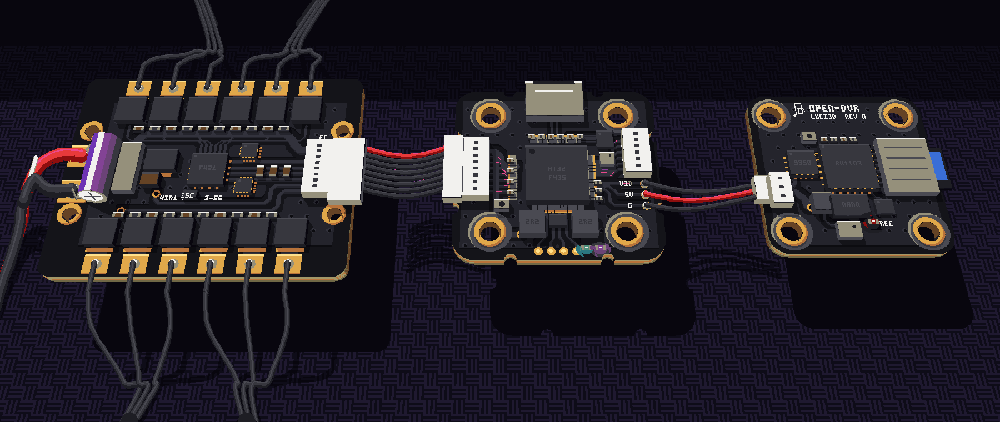
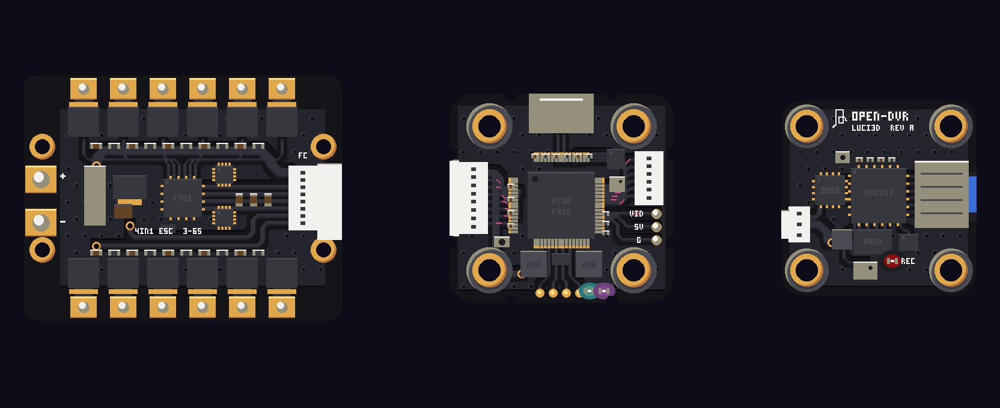
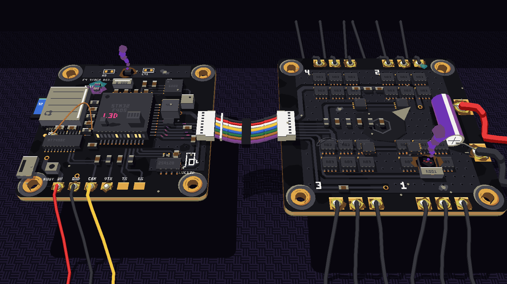

luci3D hardware
Hardware for analog FPV.
We fix, reverse-engineer and build FPV electronics. Our recorder software is open source.
U1
Open DVR
It started as a fix for a cheap analog DVR whose stock firmware records 50/60 fps files with only 25/30 different pictures a second. Our recorder runs from the SD card, flashes nothing, and records every field.
- Real 50 fps PAL and 59.94 fps NTSC
- H.264 in MPEG-TS clips that survive a power cut
- The board's microphone as an in-sync MP3 track
- Next: our own boards on the Rockchip RV1103

TP1
Inside the circuit
Every board is a city: traces are roads, chips are buildings, and old boards come with grime, scorch marks and bodge wires. luci3D, the snake from the back of our boards, runs inside the traces and sees the circuit from the inside.
The game is in development. Meanwhile, route a trace through one of the original hand-drawn zine mazes.
